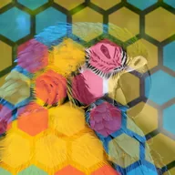

Susunan Heksagon

Menutupi lapisan dengan kisi heksagon berisi satu hingga tiga warna, dengan tepi lembut dan celah di antaranya.
Pengaturan
| Pengaturan | Jenis | Rentang | Default |
|---|---|---|---|
| Offset | Titik (X, Y) | -4000 px hingga 4000 px | 0 px, 0 px |
| Ukuran | Angka | 4 hingga 2000 | 80 |
| Regang | Angka | 0.1 hingga 10 | 1 |
| Sudut | Sudut | -3600° hingga 3600° | 0° |
| Warna | Pilihan | Satu, Dua, Tiga | Tiga |
| Warna 1 | Warna | – | #FF3A6E |
| Warna 2 | Warna | – | #35D0FF |
| Warna 3 | Warna | – | #FFD23F |
| Opasitas | Angka | 0 hingga 1 | 0.5 |
| Blending | Pilihan | Normal, Kalikan, Layar, Hamparan, Cahaya lembut, Cahaya keras, Tambah, Gelapkan, Cerahkan, Perbedaan, Dodge warna, Burn warna | Normal |
| Celah | Angka | 0 hingga 1 | 0.1 |
| Kelembutan | Angka | 0 hingga 1 | 0.1 |